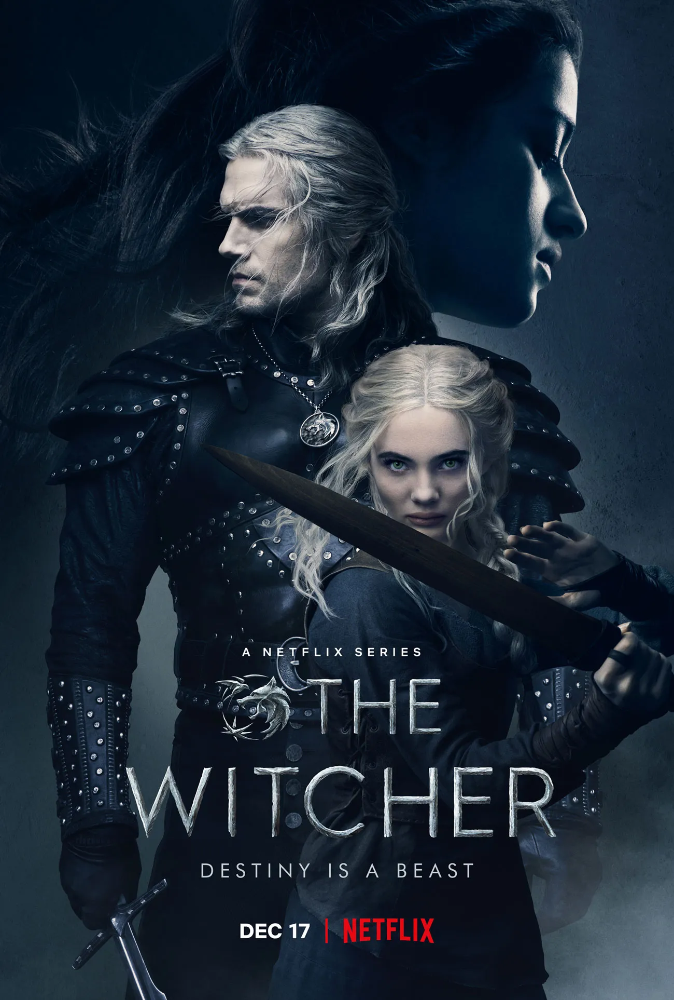

Season 1
The first season is based on Last Wish and Sword of Destiny.
Warning: Episode list contains information on the contents of the episode!
Wikipedia - List of Episodes
Season 2
The second season is loosely based on "A Grain of Truth" from The Last Wish, Blood of Elves, and the beginning of Time of Contempt.
Warning: Episode list contains information on the contents of the episode!
Wikipedia - List of Episodes
